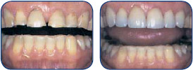

Imperfections in the smile can lead many individuals to feel self-conscious about their appearance – some so much so that they avoid social situations. Whether discolored, chipped, uneven or stained teeth are the problem, dental veneers can help. At Fabozzi Dental, we are proud to offer porcelain veneers to our patients throughout Chino Hills to help them get the smile they want and deserve. If you have been considering porcelain veneers, learn more by reading the information below, or contact Fabozzi Dental at 909-597-4711 to schedule a consultation.
What are porcelain veneers?
Porcelain veneers can be thought of as “cover-ups” for cosmetic imperfections in the smile. They a small, ultrathin pieces of porcelain that are placed over a tooth in order to improve the tooth’s appearance. Porcelain veneers can be placed on a single tooth, perhaps one that has been chipped, or they can be placed on several upper and bottom teeth in order to create a beautiful, even and bright smile. In fact, porcelain veneers can account for many of Hollywood’s best smiles.
Learn more about veneers from our ADA Patient Education Center.
How does the porcelain veneer procedure work?
Porcelain veneers are received in two separate visits to our Chino Hills dental practice. During the first appointment, the dentist will shape the tooth in order to make room for the veneer. He will then take an impression of the area being treated to create a mold for the veneer. This mold will be sent to a dental lab where the permanent veneer will be crafted, and sent back to the dental office in 7-10 days. In the meantime, patients receive a temporary veneer.
During the second appointment, Dr. Fabozzi will remove the temporary veneer and place the permanent veneer. He will make any size or shape adjustments necessary to ensure the most natural and beautiful final result. The veneer is then cemented on to the tooth and the procedure is complete.
Is the procedure painful?
Receiving porcelain veneers it not a painful process. During the appointment, Dr. Fabozzi can administer a numbing gel or anesthesia to ease any discomfort, though it is not necessary for some patients. Chino Hills porcelain veneers patients may experience mild discomfort after the dental appointment, but that will subside within 12 hours.
How long do veneers last?
As with many dental procedures, results vary on an individual basis. When cared for properly, veneers can last up to 15 years. It is important for individuals who receive veneers to practice good oral hygiene and schedule regular dental check-ups.
How is a veneer different than a dental crown?
A veneer differs from a dental crown because it does not encase the entire tooth. Dental crowns cover all sides of the tooth and are intended more for restorative dentistry purposes, rather than cosmetic purposes.
Will I be able to feel the veneer?
Dr. Fabozzi is an experienced provider of dental veneers, and as such is able to shape and size the veneers to fit naturally in your mouth. Once the veneers are placed, they become part of your natural teeth. You will not feel discomfort while eating, drinking or talking.
Dr. Fabozzi provides dental veneers for patients in Eastvale, Corona, Norco, Chino and Chino Hills, CA.
All that is good begins with a SMILE
When you visit our office, your smile is our top priority. Our entire team is dedicated to providing you with the personalized, gentle care that you deserve.
Part of our commitment to serving our patients involves providing information that helps them to make more informed decisions about their oral health needs. This website is a resource we hope you’ll find both useful and interesting.
Contact us today
We genuinely hope this site is helpful to you in learning more about our practice, dental conditions and treatments, dental recommendations, and more. Peruse our site to learn more about the care given to Chino dental implant restoration, dental bridges, composite fillings and teeth whitening patients.